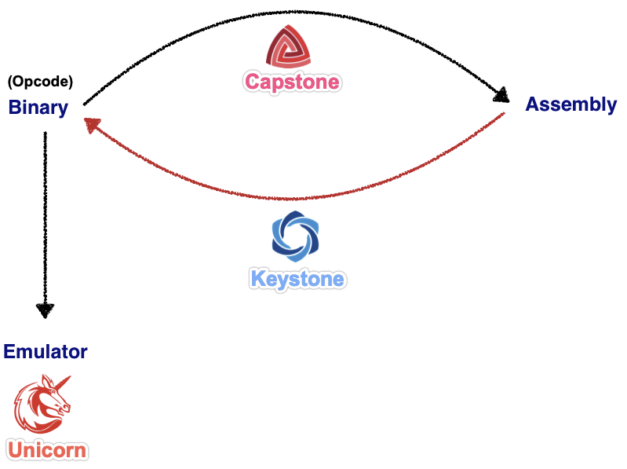

其他相关
- capstone转llvm
- chubbymaggie/capstone2llvmir: Library for Capstone instruction to LLVM IR translation
- 成套工具
- 3件套
- Logo
- 3个项目
Capstone disassembler
- Next Generation Disassembler Engine
Unicorn emulator
- Next Generation CPU Emulator
Keystone assembler
- http://keystone-engine.org
- 流程
- IDA插件
- Keypatch – Keystone – The Ultimate Assembler
- 竞品
Radare2
- Unix-like reverse engineering framework and commandline tools
Pwnypack
- CTF toolkit with Shellcode generator Ropper: Rop gadget and binary information tool
GEF
- GDB plugin with enhanced features
Usercorn
- Versatile kernel+system+userspace emulator
X64dbg
- An open-source x64/x32 debugger for windows
Liberation
- code injection library for iOS
Demovfuscator
- Deobfuscator for movfuscated binaries
- 效果：
- Fundamental frameworks for Reverse Engineering
- 